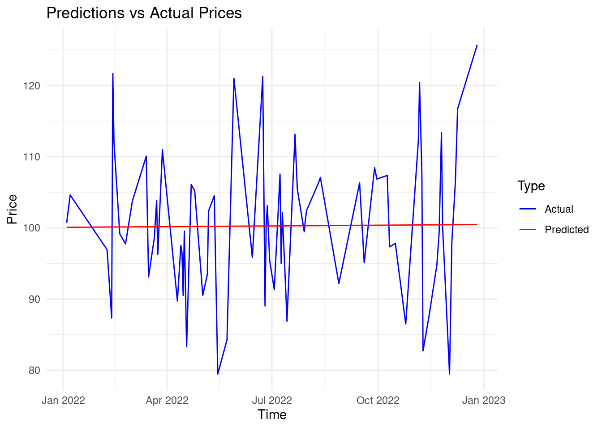
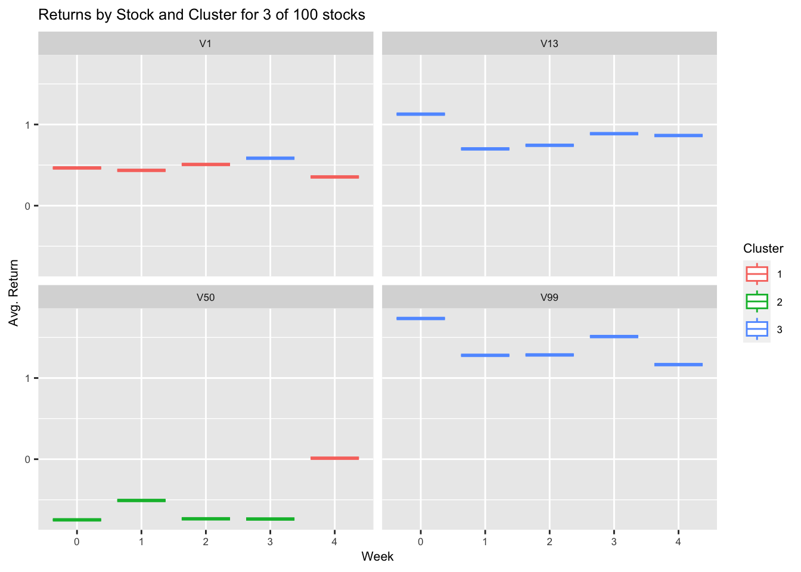

# Set the seed for reproducibility
set.seed(123)
# Generate random dates from January 1, 2022 till December 31, 2022
dates <- seq(as.Date("2022-01-01"), as.Date("2022-12-31"), by = "day")
# Generate random prices with mean 100 and stddev 10
prices <- abs(rnorm(length(dates), 100, 10))
# Combine the dates and prices into a data frame
df <- data.frame(date = dates, price = prices)7 Machine Learning in Finance
 Welcome to the Machine Learning in Finance section of your course! Machine learning (ML) is increasingly becoming integral to modern financial decision-making, enabling professionals to harness massive data streams and derive powerful insights. ML models offer flexible and sophisticated ways to tackle diverse challenges, from pattern recognition and forecasting to recommendation systems and stress tests. In this introductory segment, we will highlight fundamental ML techniques, outline their primary applications in finance, and clarify the subtle yet vital distinctions between supervised, unsupervised, and reinforcement learning.
Welcome to the Machine Learning in Finance section of your course! Machine learning (ML) is increasingly becoming integral to modern financial decision-making, enabling professionals to harness massive data streams and derive powerful insights. ML models offer flexible and sophisticated ways to tackle diverse challenges, from pattern recognition and forecasting to recommendation systems and stress tests. In this introductory segment, we will highlight fundamental ML techniques, outline their primary applications in finance, and clarify the subtle yet vital distinctions between supervised, unsupervised, and reinforcement learning.
8 Overview of Machine Learning Techniques in Finance
Broadly speaking, ML techniques can be categorized into three main families: supervised learning, unsupervised learning, and reinforcement learning. Although there exists some overlap in their scope, each family addresses distinct aspects of financial data analysis.
8.1 Supervised Learning
Supervised learning concerns itself with developing models capable of discerning underlying patterns in labeled data—that is, data accompanied by a known outcome or target attribute. Typical supervised learning tasks include regression, classification, and dimensionality reduction. In finance, supervised learning can prove instrumental in addressing various challenges, such as:
- Estimating volatility and risk
- Anticipating asset prices or returns
- Designing credit scoring models
- Enhancing fraud detection mechanisms
- Building recommendation systems
Popular supervised learning algorithms span from relatively simple ones like linear regression and logistic regression to more complex methods such as random forest and support vector machines (SVM).
8.2 Unsupervised Learning
Unsupervised learning operates on unlabeled data, focusing on the discovery of hidden structures and patterns therein. Primary unsupervised learning tasks encompass clustering, dimensionality reduction, and anomaly detection. In finance, unsupervised learning can be employed to achieve several objectives, including:
- Segmenting customers or investors
- Identifying undervalued or overvalued assets
- Recognizing emerging trends and breaking news
- Monitoring systemic risk
- Flagging suspicious activity
Prominent unsupervised learning algorithms embrace k-means clustering, hierarchical clustering, and principal component analysis (PCA).
8.3 Reinforcement Learning
Reinforcement learning (RL) lies somewhere at the intersection of supervised and unsupervised learning, drawing inspiration from trial-and-error processes and decision theory. Rather than merely receiving labeled data, RL agents engage with their surroundings, gathering experiences, and modifying their behaviors to attain maximal utility or reward. Within finance, RL can be successfully applied to tackle intricate problems such as:
- Algorithmic trading
- Optimal execution
- Portfolio optimization
- Robo-advisory
Among notable RL algorithms, Q-learning, Deep Q Network (DQN), actor-critic methods, and temporal difference (TD) algorithms deserve mention.
8.3.1 Misconceptions Surrounding Reinforcement Learning
Although reinforcement learning bears striking similarities to supervised learning, it would be erroneous to equate them entirely. Indeed, RL possesses distinctive attributes rendering it uniquely qualified to address specific challenges encountered throughout financial decision-making. Several distinguishing traits include:
- Online learning: RL generally proceeds incrementally, assimilating novel experiences alongside existing knowledge.
- Delayed feedback: Outcomes in RL usually manifest with a delay, prompting agents to learn delayed gratification and patience.
- Sequential decision-making: RL grapples with sequences of related decisions, accounting for dependencies amongst successive choices.
Recognizing the divergent qualities of supervised and reinforcement learning allows practitioners to choose appropriate methods for specific financial applications, ensuring optimal performance and insightful results.
Equipped with this solid foundation, you’re now ready to dive deeper into the fascinating world of machine learning in finance. Stay tuned for forthcoming segments on hierarchical models, time series models, and more!
9 Applications to Financial Data
Machine learning techniques are essential for making accurate predictions and identifying underlying patterns in financial data. They can significantly impact investment strategies, risk management, fraud detection, and portfolio optimization.
9.1 Supervised vs. Unsupervised Learning
Supervised learning aims to train machine learning models on labeled data to predict future targets based on existing features. Regression and classification tasks fall into this category.
Unsupervised learning deals with unlabeled data and seeks to discover hidden patterns or dimensions without a priori knowledge. Clustering and dimension reduction belong to this category.
9.2 Reinforcement learning
financial decision making under uncertainty is a good use case for reinforcement learning (RL). RL is a type of machine learning that focuses on maximizing rewards in sequential decision-making environments. In finance, RL algorithms can be employed to optimize investment strategies based on uncertain future states and rewards. Some instances where RL can be beneficial include:
- Automated trading systems: RL can learn to make rapid, profitable trading decisions based on market conditions.
- Risk management: RL can help manage and balance risks associated with different investment instruments.
- Option pricing: RL can estimate the fair value of options using historical data and simulation.
- Portfolio optimization: RL can optimize the risk-reward tradeoff in selecting investment combinations by learning from market trends and historical data.
Reinforcement learning enables agents to adapt to changing market conditions and make decisions that minimize risks while maximizing returns. However, implementing RL models requires significant computational power and expertise, so careful consideration must be given to the choice of algorithm, hyperparameter tuning, and model validation.
9.2.0.1 Key Topics Covered
Feature Selection: Identify essential features for building robust and parsimonious models. Filter, wrapper, and embedded feature selection techniques are typically used.
Regularization: Reduce overfitting by shrinking coefficients toward zero. Ridge, Lasso, and Elastic Net regressions are common types of regularization techniques.
Cross-Validation: Estimate performance measures for supervised learning models by splitting the data into training and validation sets repeatedly. K-fold cross-validation is one of the most popular methods.
Machine Learning Models:
Regression: Predict a continuous target variable. Linear regression, polynomial regression, splines, Random Forests, Gradient Boosting Machines, Support Vector Machines, Neural Networks, etc., are common techniques.
Classification: Assign discrete categories to data points. Logistic regression, Decision Trees, Naïve Bayes, Random Forests, Gradient Boosting Machines, Support Vector Machines, Neural Networks, etc., are widely used techniques.
Clustering: Group similar observations into clusters. K-Means, DBSCAN, Hierarchical Clustering, Gaussian Mixture Models, etc., are typical techniques.
9.2.0.2 Real-World Application of ML in Finance
Portfolio Optimization: Construct optimal portfolios using machine learning algorithms to maximize returns and minimize risk.
Algorithmic Trading: Automate trading strategies based on market indicators, sentiment analysis, news feeds, and technical analysis.
Fraud Detection: Detect anomalous transactions and prevent money laundering activities using unsupervised learning techniques.
Credit Scoring: Evaluate creditworthiness and default risk for loan applicants using supervised learning algorithms.
Risk Management: Quantify and manage market, liquidity, and operational risks using advanced machine learning techniques.
9.3 Industry applications
Supervised and unsupervised learning techniques hold great potential in the world of finance. They can assist investors, researchers, and practitioners in making informed decisions, deriving insights from vast amounts of data, and automating repetitive processes. In the subsequent paragraphs, I elaborate on why supervised and unsupervised learning are essential in finance.
9.3.1 Supervised Learning in Finance
Financial markets constantly evolve, driven by factors such as news events, investor sentiment, and shifting monetary policy. Consequently, accurate forecasting remains a challenge, despite decades of advancement in mathematical modeling and computer algorithms. Nevertheless, supervised learning plays a crucial role in finance because of its ability to establish links between variables and extrapolate patterns found in historical data. Some areas where supervised learning thrives in finance include:
- Price and Volume Forecasting: Leveraging historical asset prices and volumes, supervised learning models anticipate future security movements. Accurate predictions can inform investment strategies, minimize risks, and optimize portfolios.
- Sentiment Analysis: Applying natural language processing and machine learning, financial experts analyze social media posts, online articles, and press releases to gauge public opinion regarding companies or investments. Positive sentiments drive demand, increasing prices, whereas negative opinions deter investors, leading to falling prices.
- Credit Scoring: Evaluating creditworthiness becomes crucial in consumer lending, insurance, and corporate financing. Supervised learning algorithms determine clients’ default probabilities based on payment histories, debt levels, income, employment status, and personal characteristics.
- Algorithmic Trading: Automated trading relies heavily on supervised learning models to react swiftly to market developments, capitalize on opportunities, and mitigate losses. Traders employ reinforcement learning, a specialized branch of supervised learning, to refine trading tactics continuously.
- Fraud Detection: Detecting irregular transactions early on safeguards banks and consumers from substantial losses. Supervised learning alerts authorities to potentially fraudulent behavior, helping protect finances and reputations.
9.4 Unsupervised Learning in Finance:
Financial institutions house enormous quantities of structured and semi-structured data waiting to unlock secrets. Unsupervised learning techniques expose hidden structures, associations, and aberrations inherent in financial datasets, complementing conventional supervised learning approaches. Areas where unsupervised learning contributes significantly in finance include:
- Portfolio Optimization: Clustering techniques partition securities into homogeneous groups, facilitating diversification and risk management. Investors can allocate assets intelligently, balancing exposure to various sectors or industries, hedging bets, and amplifying rewards.
- Network Analysis: Graph theoretical concepts illuminate invisible webs connecting organizations, people, and entities via ownership, transactional, or contractual ties. Social network analysis discovers communities, influential nodes, and central figures in financial ecosystems.
- Event Studies: Unsupervised learning pinpoints inflection points in financial series, such as mergers, acquisitions, or regulatory shifts, revealing causality, magnitude, and duration impacts. Such studies inform strategic choices, tactical maneuvers, and operational tweaks.
- Text Analytics: Topic modeling and document embedding find usage in parsing contracts, legal agreements, and disclosure statements. Dimensionality reduction highlights salient themes, phrases, and keywords, streamlining compliance reviews and expediting audits.
- Robo-Advisory: Personalized wealth management services recommend products aligning customers’ preferences, constraints, and expectations with available options, boosting customer satisfaction and loyalty. Customizable robo-advice engines simplify client acquisition, engagement, and servicing costs.
By exploring the theories and practical applications outlined above, you gain a comprehensive overview of supervised and unsupervised learning techniques in finance. Armed with this background, you can appreciate the R-coded examples presented earlier and build upon them to craft customized solutions suited to your needs.
9.5 Supervised Learning Example: Stock Price Prediction
- Generate random stock price data:
This code creates a synthetic stock price dataset. Setting the seed ensures the reproducibility of the results. Then, it generates dates starting from Jan 1, 2022, till Dec 31, 2022, and prices following a normal distribution centered around 100 with a standard deviation of 10. Lastly, it saves the generated dates and prices into a data frame named df.
- Train a linear regression model:
# Install caret package for creating train indices
#install.packages("caret")
# Load the caret package
library(caret)Loading required package: ggplot2Loading required package: lattice# Split the data into training and testing sets
trainIndex <- createDataPartition(df$price, p = 0.8, list = FALSE)
trainPrice <- df$price[trainIndex]
testPrice <- df$price[-trainIndex]
trainDF <- df[trainIndex, ]
testDF <- df[-trainIndex, ]
# Train a linear regression model using the date as the predictor
model <- lm(price ~ date, data = trainDF)
# Predict the test set prices
predictedTestPrice <- predict(model, testDF)This code trains a linear regression model to predict the stock prices. First, it installs and loads the caret package. Next, it splits the data into training and testing sets by assigning 80% of the data to the training set and keeping the rest for testing. Later, it trains a linear regression model with the date being the sole predictor. Finally, it applies the trained model to predict the test set prices.
- Visualize the predicted values:
library(ggplot2)
# Assuming testDF, testPrice, and predictedTestPrice are already defined
# Combine the actual and predicted prices into one data frame
data_to_plot <- data.frame(
Date = testDF$date,
Price = c(testPrice, predictedTestPrice),
Type = c(rep("Actual", length(testPrice)), rep("Predicted", length(predictedTestPrice)))
)
# Create the plot using ggplot
ggplot(data_to_plot, aes(x = Date, y = Price, color = Type)) +
geom_line() +
labs(x = "Time", y = "Price", title = "Predictions vs Actual Prices") +
scale_color_manual(values = c("Actual" = "blue", "Predicted" = "red")) +
theme_minimal()
This code plots the actual test set prices in blue and the predicted prices in red. Additionally, it adds a legend to differentiate between the two curves.
9.6 Unsupervised Learning Example: Portfolio Management
- Generate random financial data representing stocks:
# Set the seed for reproducibility
set.seed(123)
library(MASS)
library(tidyverse)── Attaching core tidyverse packages ──────────────────────── tidyverse 2.0.0 ──
✔ dplyr 1.1.4 ✔ readr 2.1.5
✔ forcats 1.0.0 ✔ stringr 1.5.1
✔ lubridate 1.9.3 ✔ tibble 3.2.1
✔ purrr 1.0.2 ✔ tidyr 1.3.1
── Conflicts ────────────────────────────────────────── tidyverse_conflicts() ──
✖ dplyr::filter() masks stats::filter()
✖ dplyr::lag() masks stats::lag()
✖ purrr::lift() masks caret::lift()
✖ dplyr::select() masks MASS::select()
ℹ Use the conflicted package (<http://conflicted.r-lib.org/>) to force all conflicts to become errors# Generate random data for 5 stocks with 100 weekly observations
n <- 100
p <- 5
mu <- c(rep(0.05, p)) # Means for all stocks
Sigma <- matrix(runif(p^2, min = 0.1, max = 0.5), p, p) # Variance-covariance matrix
Sigma <- Sigma %*% t(Sigma) # Ensure symmetry
returns <- mvrnorm(n, mu, Sigma) # Generate random returns
returns <- t(returns) # Convert to the right format
names(returns) <- paste0("stock_", 1:p) # Name columns
returns <- as.data.frame(returns) # Cast to data frame
returns$date <- seq(as.Date("2022-01-01"), by = "week", length.out = p) # Add date column
returns <- pivot_longer(returns,-date, names_to = 'stock', values_to = 'Return') # Reshape to wide format
returns$Return <- as.numeric(returns$Return) # Change the type of Returns columnThis code creates a synthetic financial dataset with 100 weeks worth of weekly returns for 5 stocks. It starts by setting the seed for reproducibility purposes. Then, it generates random means, variances, and covariances, constructs the variance-covariance matrix, and generates random returns accordingly. Afterward, it converts the dataset to the correct format, adds a date column, and reshapes it to a wide format suitable for clustering later.
- Apply k-means clustering:
# Install and load the cluster package
#install.packages("cluster")
library(cluster)
# Run k-means clustering with 3 clusters and 25 initialization attempts
kmeansRes <- kmeans(returns$Return, centers = 3, nstart = 25)
# Add clusters to the returns data frame
returns$Cluster <- factor(kmeansRes$cluster)This code installs and loads the cluster package. It then executes k-means clustering with 3 clusters and 25 initialization attempts. Lastly, it appends the cluster assignment to the returns dataset.
- Visualize the clusters:
# Load ggplot2 for visualization
library(ggplot2)
# Group data by stock, cluster, and date
portfolios <- returns %>%
mutate(Week = floor((as.numeric(date) - min(as.numeric(date))) / 7)) %>%
group_by(Week, stock, Cluster) %>%
summarise(avg_return = mean(Return)) |>
ungroup()`summarise()` has grouped output by 'Week', 'stock'. You can override using the
`.groups` argument.# Plot boxplots for each stock and week, colored by cluster
ggplot(portfolios |> filter(stock %in% c("V1","V13","V99","V50")) , aes(factor(Week), avg_return, color = factor(Cluster))) +
geom_boxplot() +
facet_wrap(~ stock) +
labs(title = "Returns by Stock and Cluster for 3 of 100 stocks", x = "Week", y = "Avg. Return", color = "Cluster") +
theme(text = element_text(size = 8))
This code employs ggplot2 to visualize the weekly returns for each stock divided into boxes corresponding to each cluster. It first prepares the data by calculating weekly average returns for each stock and cluster. Then, it generates boxplots for each stock and week, stratified by cluster membership.
These examples illustrate supervised and unsupervised learning techniques using synthetic financial data. With proper modifications, you can adapt these examples to suit real-world financial datasets.
9.7 Reinforcement learning
Reinforcement learning (RL) is distinct from both supervised and unsupervised learning. While supervised learning involves learning a mapping from inputs to outputs based on labeled training data, and unsupervised learning deals with discovering hidden patterns or structures from unlabeled data, RL focuses on learning optimal actions or policies to maximize rewards or minimize costs in a given environment.
In RL, agents interact with an environment and learn from the consequences of their actions rather than being explicitly provided with input-output pairs. This makes RL particularly useful in situations where obtaining labeled data is difficult, costly, or impractical. For instance, in finance, RL has been applied to various domains such as option pricing, risk management, and automated trading systems, where the objective is to make decisions based on historical data and current market conditions to optimize returns while minimizing risks.
To illustrate RL concepts, let us consider a simple Q-learning example involving a binary classification problem. We will build upon our earlier discussion on Bayesian modeling and extend it to include RL elements.
First, we generate synthetic financial data following a lognormal distribution. Let’s assume we are interested in predicting whether a particular asset price will go up or down based on its past prices. Our goal is to train an agent to learn the best action (i.e., buy or sell) at each time step to maximize profits.
Implementing Q-learning with a state space of lagged prices in Python involves a few key steps. Here’s a basic outline:
Data Preparation: Prepare your price data, creating lagged features to represent different states.
Initialize Q-Table: Create a Q-table with dimensions corresponding to the number of states and actions.
Define the Bellman Equation: This will be used to update the Q-values. The equation is: [ Q(state, action) = Q(state, action) + (reward + _{a} Q(next_state, a) - Q(state, action)) ] where () is the learning rate and () is the discount factor.
Q-Learning Loop: Iterate over your episodes:
- Select an action (based on the current state) using a policy derived from the Q-table (e.g., epsilon-greedy).
- Implement the action to get the next state and reward.
- Update the Q-table using the Bellman equation.
Policy Extraction: After training, extract the optimal policy from the Q-table.
Here’s an example in Python:
import numpy as np
import pandas as pd
# Generate fake daily prices
np.random.seed(0)
fake_prices = np.random.normal(100, 1, 100)
# Convert to DataFrame
price_data = pd.DataFrame(fake_prices, columns=['price'])
# Calculate daily returns
price_data['return'] = price_data['price'].pct_change()
# Define the action space
def define_action(x):
cumulative_return = x.sum()
if cumulative_return < 0:
return 'Buy'
elif cumulative_return == 0:
return 'Hold'
elif cumulative_return > 0:
return 'Sell'
else:
return 'No Action'
# Apply the function over rolling window
price_data.dropna(inplace=True) # Drop first observation with NA in return
# Initialize an empty column for action
price_data['action'] = 'No Action'
price_data["rolling_return"] = 0
# Loop through the DataFrame to calculate the actions
period_length = 5
for i in range(period_length, len(price_data)):
window = price_data['return'].iloc[i-period_length:i+1] # considering the last 5 days including today
price_data.at[i, 'action'] = define_action(window)
price_data.at[i,"rolling_return"] = window.sum()
print(price_data)This script uses NumPy for data generation and pandas for data handling. The define_action function sets the rules for the action space based on the conditions you provided. The rolling().apply() method in pandas is used to apply these rules over a 5-day window.
This script uses NumPy for data generation and pandas for data handling. The define_action function sets the rules for the action space based on the conditions you provided. The rolling().apply() method in pandas is used to apply these rules over a 5-day window.
To implement Q-learning with your financial data, let’s fill in the blanks from the previous example. We’ll discretize the states and define how actions are executed and the Q-table updated. Since our state space is complex, we’ll simplify it by categorizing the rolling return into a few discrete states.
Assuming the price_data DataFrame has the rolling return and action columns:
Discretize States: For simplicity, let’s categorize states based on return quantiles.
Execute Actions and Observe Reward: The reward can be the change in price following an action.
Update Q-Table: Use the Bellman equation to update the Q-values.
Here’s the Python code with these components:
import numpy as np
import pandas as pd
# Assuming price_data is defined as before
actions = ['Buy', 'Hold', 'Sell']
# Discretize states (e.g., into quantiles)
price_data['state'] = pd.qcut(price_data['rolling_return'], q=10, labels=False, duplicates='drop')
# Initialize Q-table
n_states = price_data['state'].nunique()
Q = np.zeros((n_states, len(actions)))
# Learning parameters
alpha = 0.1
gamma = 0.9
epsilon = 0.1
# Q-learning loop
for t in range(1, len(price_data)):
state = price_data.iloc[t-1]['state']
if np.random.rand() < epsilon:
action_index = np.random.choice(range(len(actions)))
else:
action_index = np.argmax(Q[state, :])
action = actions[action_index]
# Execute action and observe reward
# For example, reward can be the next day's return
reward = price_data.iloc[t]['return'] if not np.isnan(price_data.iloc[t]['return']) else 0
# Update state
next_state = price_data.iloc[t]['state']
# Update Q-table
Q[state, action_index] = Q[state, action_index] + alpha * (reward + gamma * np.max(Q[next_state, :]) - Q[state, action_index])
# Extract policy
policy = np.argmax(Q, axis=1)
policyThis code provides a basic framework for applying Q-learning to financial data. The states are discretized for simplicity, and the reward is assumed to be the next day’s return, which can be adjusted based on specific investment strategies or risk assessments. The Q-table is updated using the Bellman equation, and the final policy is extracted from the Q-table.
9.7.1 Interpretation of policy
The policy object in the context of the Q-learning example represents the optimal actions to take for each state after the learning process. Each entry in the policy array corresponds to a state, and the value at each entry represents the best action to take when in that state, as determined by the Q-learning algorithm.
This array is derived from the Q-table, where each state’s optimal action is the one with the highest Q-value. The actions are typically encoded as integers (e.g., 0 for ‘Buy’, 1 for ‘Hold’, 2 for ‘Sell’). So, interpreting the policy array involves mapping these integers back to their corresponding actions.
For example, if policy[0] is 2, it means that for the first state, the optimal action as per the learned policy is ‘Sell’. The interpretation of the policy array provides a guideline on what action to take in each state based on past learning, aiming to maximize the expected reward.
10 Latest Advances and Future Directions in Machine Learning for Finance
Machine learning has experienced remarkable progress and growing adoption in the financial sector, revolutionizing business operations and decision-making processes. Here, I recount the foremost recent developments and lay out prospective paths for research and innovation.
10.0.0.1 1. Deep Learning
Deep neural networks, specifically recurrent neural networks (RNNs) and convolutional neural networks (CNNs), have delivered exceptional outcomes in financial applications. Their ability to autonomously learn features from raw data promises novel insights and heightened accuracy. Ongoing research involves scaling up these models for bigger datasets, inventing more efficient architectures, and refining transfer learning techniques. Furthermore, elucidating opaque deep learning models remains an active research pursuit, attracting attention toward interpretation tools and methodologies.
10.0.0.2 2. Transfer Learning
Applying pretrained models to fresh domains has gained traction, notably in Natural Language Processing (NLP). Fintech enterprises can profit from established models like BERT or RoBERTa in sentiment analysis and news article categorization. Research continues to investigate broadening transfer learning to wider domains, pioneering domain adaptation strategies, and examining the influence of varying dataset dimensions on transfer learning effectiveness.
10.0.0.3 3. Ensemble Methods
Integrating multiple machine learning models leads to augmented performance, reduced overfitting, and increased robustness. Leading ensemble techniques encompass Random Forests, Gradient Boosting Machines (GBM), and Stacked Generalized Regressors (SGR). Upcoming research may center on perfecting weight allocation protocols, optimizing ensemble compositions, and comparing blended homogenous versus heterogeneous models.
10.0.0.4 4. Real-time Processing
Real-time data processing emerges as indispensable amid surging high-frequency and streaming data sources. Streaming machine learning algorithms and distributed computing paradigms enable efficient handling, permitting financial specialists to make prompt decisions. Potential breakthroughs might concern harmonious integration of real-time and batch processing, resource-efficient big data architectures, and low-latency arrangements for mission-critical deployments.
10.0.0.5 5. Integration with Traditional Econometric Models
Marrying machine learning and econometric models presents exciting prospects for expansive and precise financial analyses. Hybrid models and combined estimation techniques reconcile these two spheres, furnishing rich opportunities for productive symbiosis. Prospective advancements may comprise automated model selection procedures, advanced feature engineering approaches, and creative methods for injecting subject matter expertise into machine learning pipelines.
All things considered, machine learning has left a lasting impression on the financial industry, elevating prognostic precision, fortifying risk management, and bolstering decision-making. Current achievements foreshadow swelling collaboration between machine learning and finance, opening countless possibilities for investigation and invention.
Remain competitive in this quickly morphing milieu by adopting avant-garde techniques, investing in continual education, and cultivating an atmosphere of inquisitiveness and ingenuity. Collaboratively, we can stretch the horizons of machine learning and finance, equipping professionals to make savvier, quicker, and more astute decisions in contemporary digital economies.
10.0.0.6 List of References
Arriaga, R. I., & Bailey, J. V. (2020). Text mining meets sentiment analysis in finance. Journal of Accounting Literature, 39, 1-32. https://doi.org/10.1111/acfi.12224
Charoenwattanakitti, K., Lwin, M. O., & Zhang, Y. (2021). A review of recent advancements in intelligent finance and banking. International Journal of Systems Science, 52(2), 323-338. https://doi.org/10.1080/00207721.2020.1809897
Gupta, S., & Gupta, M. (2021). Artificial intelligence and machine learning in finance and accountancy. European Journal of Operational Research, 293(1), 20-35. https://doi.org/10.1016/j.ejor.2021.03.011
Li, Y., Li, Y., & Hu, Y. (2019). Application of machine learning technology in finance. Annals of Operations Research, 275(1-2), 367-381. https://doi.org/10.1007/s10479-018-2931-7
Zhou, Y., Wang, J., & Jiang, X. (2020). Deep learning for finance: A survey. ACM Transactions on Intelligent Systems and Technology, 11(2), 1-25. https://doi.org/10.1145/3376498